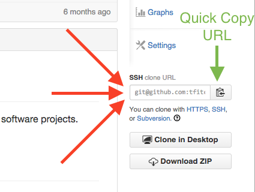
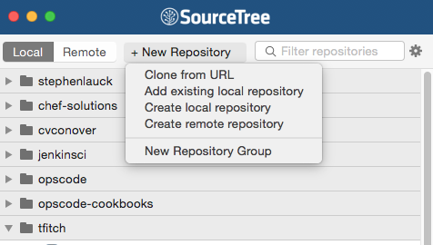
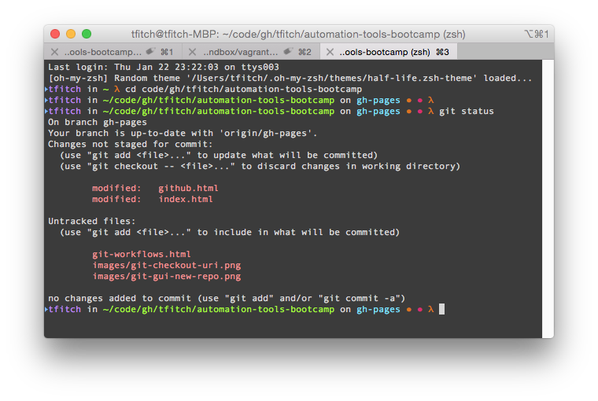
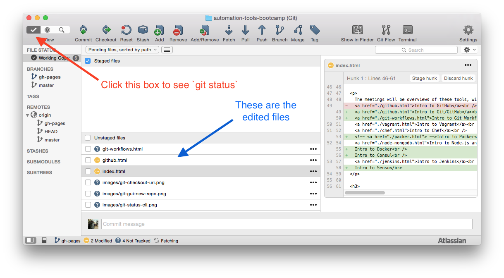
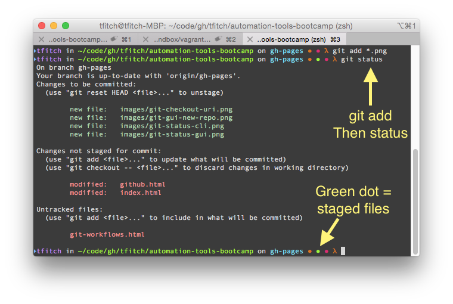
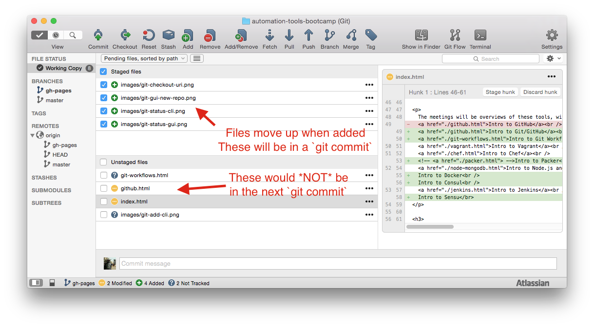
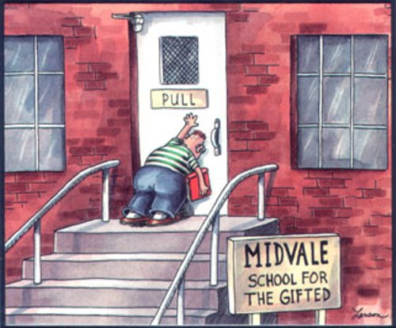

Introduction to Git
This is a quick introduction to Git. Get code. Edit code. Check in code. Push Code.
Great overview of Git from Atlassian
This does *not* cover branching.
If you know the above stuff then hop on over to the fancy stuff in Git, like workflows users can adopt when using Git. You can look at two - Fork + Pull Request and Git Flow on the Git Workflows section. Pick the right one for your project and start coding.
Benefits of Git
- "Offline" Support
- Only checking in some of your edited files
- .gitignore
- Use in Open Source Software projects
- Multiple client options - check out SourceTree. It is free!
- GitHub Bonus: Gists (think pastebin)
- GitHub repo browser plugin for Chrome called Octotree
- Subjectively: Git makes me happy compared to other version control systems
- Tip: What's going on with my repo right now?
git status
Checkout a Git repository
If you want to edit some code or build it locally, you are going to need to check it out from the source. That source is a URI that can look like git@github.com:tfitch/automation-tools-bootcamp.git or https://github.com/tfitch/automation-tools-bootcamp.git
The git protocol will run over ssh and use a key based authorization when communicating to the server. The HTTP(S) connection to a Git repo is valid and can pass a username/password for authorization to achieve the same functionality as the git/ssh protocol uses. The HTTP connection is a great backup when a firewall is blocking ssh connections.

Make a new Git repository
- If you like the command line:
git inithttp://git-scm.com/docs/git-init - If you like a GUI: push the button(s).

Edit your files
Now that you have your repo checked out, feel free to edit your files with your favorite text editor. That's it. No second checkout/making writeable like with Perforce. Just start working without Git being in your way.
You've edited your files so let's look at what has been edited.
git status http://git-scm.com/docs/git-status

Or you're using a GUI based tool.

Add files for check in
And now we're ready to git add the changes so they can be checked in. http://git-scm.com/docs/git-add
* That green dot in the image, that's just because my command prompt (oh-my-zsh + a random theme do that). Your mileage may vary.*

This is what the staged files look like in a GUI.

Checking in your edited files
All the prep work is done. You're ready to make your edit real and commit to it.
git commit -m "My commit message for my change" http://git-scm.com/docs/git-commit
Push it real good.
So you're done!
Why not? Git is a Distributed Version Control System. Your committed changes aren't also someone else's changes until you git push them back to the origin. http://git-scm.com/docs/git-push
Pull it over
You're not coding on an island. Along with pushing your changes up to the origin, you need to git pull changes from origin that are being added to your project. http://git-scm.com/docs/git-pull
Or you can look at what changes you're missing from origin by running git fetch http://git-scm.com/docs/git-fetch

Workout
We are going to complete the following actions
- Install SourceTree.
- Initiate a new Git repository.
- Add a
README.mdfile to the repo. - Commit a change to the
README.mdand push the change up to your Github account. - Go to the next workout that covers Git branching and workflows.